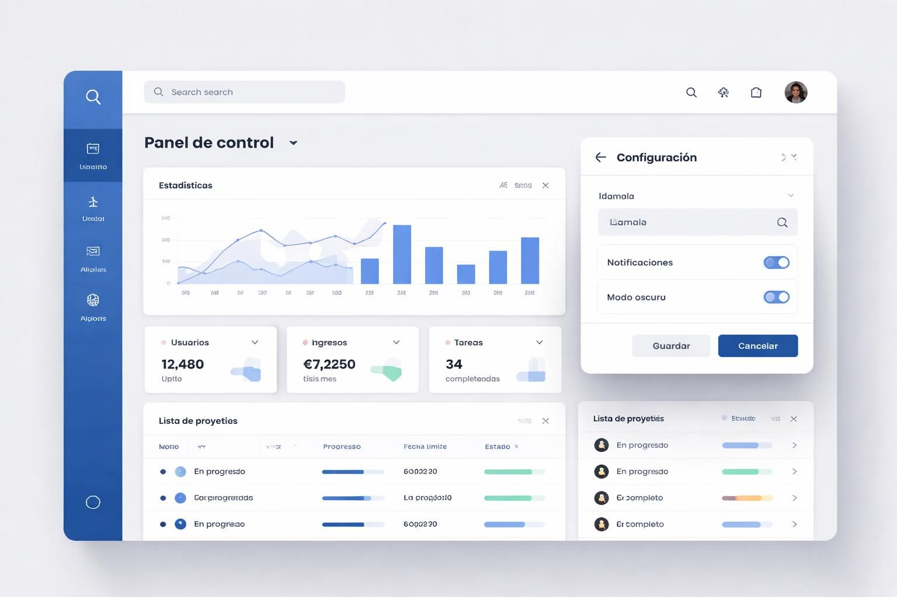
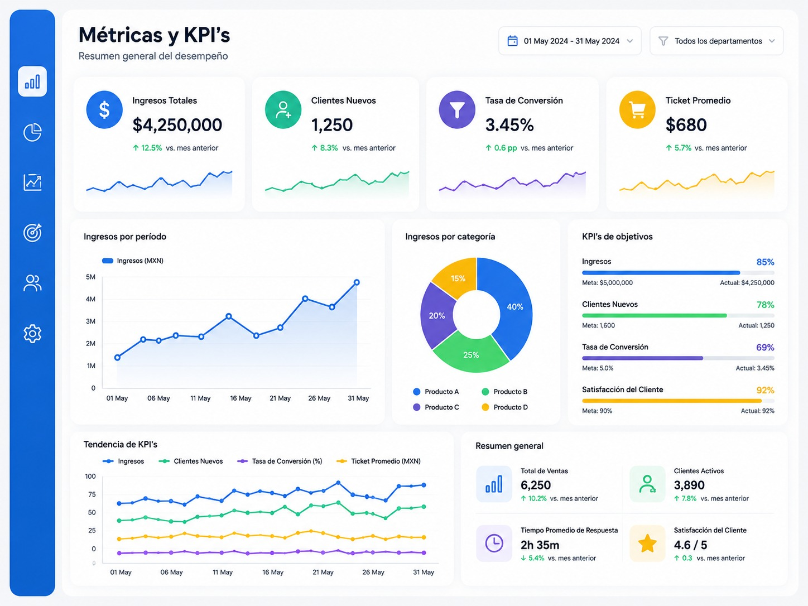
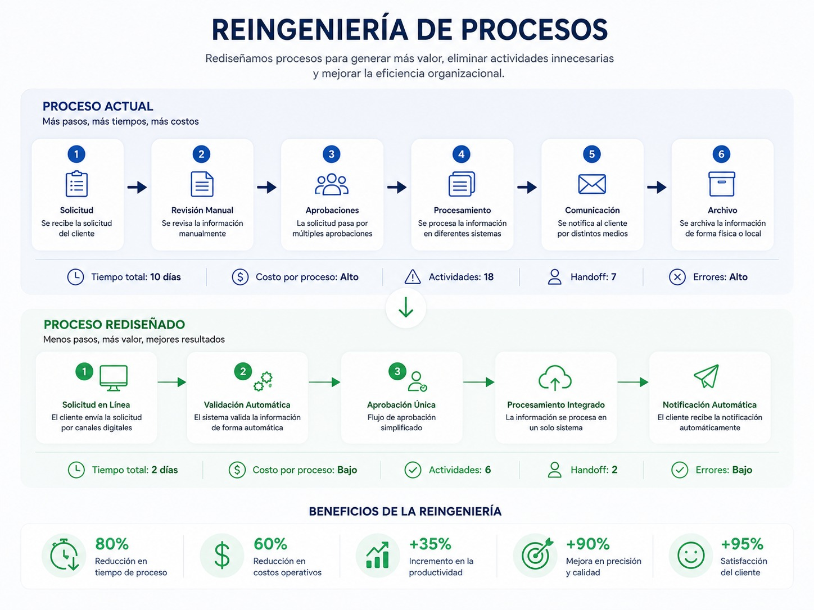

QA Manager with more than 20 years of experience leading software quality assurance initiatives across banking, fintech, retail, and government sectors.
Extensive experience managing multidisciplinary teams in high-complexity, mission-critical projects, with a strong focus on release stability, production risk reduction, and continuous quality improvement.
Successfully reduced production incidents by up to 98%, increased test coverage across critical business flows, and optimized delivery cycles in high-demand enterprise environments
QA Services Specialist with solid experience in the design, execution, and automation of functional, integration, and regression testing. Skilled in test plan development, test case and scenario creation, test environment management, and incident tracking, ensuring application quality and stability through quality assurance methodologies and tools.
Bachelor Degree in Computer Science
Complementary Studies in Industrial Administration
Jira
Trello
Asana
Clarity
Microsoft Project
Quality Center HP
Application Live Management HP
Team Foundation server Microsoft
Clear Quest IBM
Postman
SeleniumDriver
Cucumber
JMeter
LoadRunner HP
GitHub
UML
Visio
Figma
Draw.io
SQL
SQL Server
MySQL
MongoDB
PostgreSQL
Vysor
Android Studio
Visual Studio Code
Xcode
Reduced production incidents by 98% through the implementation of a preventive QA strategy and enhanced validation processes
Incremented functional coverage by 100% in critical business flows, improving release stability.
Implementation of integrated test automation in CI/CD pipelines, reducing validation cycles and accelerating deliveries.
Definition of QA strategy for web, Android applications, and POS systems.
Implementation of QA metrics dashboards for executive decision-making.
Leadership of cross-functional teams under Agile/Scrum, aligning QA with business objectives.
Management of the defect lifecycle in production releases, reducing risks in
production.
Identification of critical risks and continuous optimization of the quality process.
Led QA teams across simultaneous projects within financial, retail, and government sectors.
Designed functional testing strategies, regression, integration, performance and volume tests.
Implemented test automation to improve efficiency and coverage.
Defined quality KPIs and executive reports for stakeholders.
Managed defects in critical production environments, ensuring release stability.
Executed UAT tests and business requirement validation.
Performed API testing and enterprise systems integration testing.
Collaborated with UX/UI to improve the end-user experience.
Improved QA processes under Agile and Waterfall methodologies.
Design and execution of functional and regression tests.
Support in the initial implementation of test automation.
Collaboration with development and business teams in requirement gathering.
Execution of tests in web and enterprise systems.

Web Apps

Metrics
KPIs

Process Reengineering
User Stories, Epics, Test Cases
Banking, Sales Terminal